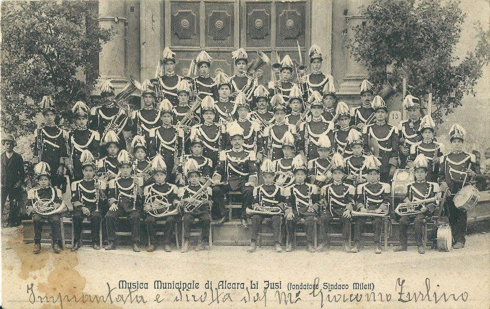

Una storia iniziata nel 1911, costruita attraverso generazioni di musicisti, tradizione, passione e cultura.
L'Associazione Musicale Alcarese fu fondata ad Alcara Li Fusi (ME) nel 1911 per interessamento del sindaco Giuseppe Mileti, che ne affidò la direzione organizzativa e musicale al maestro Giacomo Zurlino.
Oltre allo Statuto e agli atti della Giunta Comunale del tempo, la fondazione è attestata anche da una preziosa fotografia d'epoca che mostra il Corpo Bandistico Municipale con una imponente uniforme commissionata dal sindaco Mileti, composto da 42 elementi più il maestro, schierati per l'occasione sul sagrato della Chiesa Madre.
Quel gruppo di amanti della cultura scommise che Alcara, un giorno, avrebbe avuto un ruolo importante nell'ambito culturale, così come la sua tradizione, i suoi personaggi e la sua storia volevano e meritavano. Quel loro sogno si è realizzato.
Da allora questa istituzione locale ha favorito lo sviluppo nella comunità di una forte tradizione, passione e cultura musicale e, da oltre un secolo, rappresenta un importante veicolo di divulgazione della musica. Nel corso della sua storia ha coinvolto quasi 400 persone, contribuendo fortemente all'educazione musicale di tanti alcaresi.
Molti di coloro che hanno iniziato il proprio percorso musicale nella Banda hanno poi proseguito gli studi con successo, diplomandosi al Conservatorio e raggiungendo importanti livelli professionali, fino a entrare a far parte di orchestre e bande di prestigio nazionale.
Dopo più di 110 anni, la nostra associazione è una realtà culturale fortemente radicata nella comunità. Insieme alla sua Scuola di Musica, svolge un ruolo fondamentale di interazione e aggregazione sociale, mettendo a confronto generazioni, esperienze e professionalità diverse.
La Banda partecipa con stile e impegno alle manifestazioni pubbliche ufficiali, locali e non, sia religiose che civili: dalle feste patronali alle celebrazioni della Settimana Santa, dai concerti di musica classica alle commemorazioni dei Caduti.
Il repertorio comprende, oltre alle tradizionali marce militari, brani originali e trascrizioni di musica classica, jazz e contemporanea. L'associazione organizza inoltre eventi musicali, culturali e ricreativi.

Nato a Messina il 1° maggio 1962, Michele Saccone si avvicina alla musica all'età di undici anni, entrando nella Scuola di Musica Municipale Alcarese. Nel 1975 entra ufficialmente a far parte della Banda, iniziando a suonare il sax contralto.
Nel 1977 intraprende gli studi presso il Conservatorio “A. Corelli” di Messina, nella classe di fagotto del M° Dante Pavarini, conseguendo il diploma nel 1984 con il M° Aldo Terzo.
Nel 1981 viene nominato Maestro Direttore della Banda Municipale Alcarese, incarico che ricopre tuttora, diventando una figura centrale nella continuità musicale e nella crescita dell'associazione.
Ha approfondito lo studio del fagotto a Milano con il M° Ovidio Danzi, primo fagotto dell'Orchestra del Teatro alla Scala, e successivamente a Winterthur, in Svizzera, con il M° Janos Meszaros.
Nel corso della sua attività professionale ha collaborato con importanti formazioni orchestrali e cameristiche, prendendo parte a numerosi concerti in Italia e a prestigiose produzioni musicali.
La sua attività comprende anche la musica antica, la ricerca e la valorizzazione del patrimonio etnomusicologico, oltre all'insegnamento dell'Educazione Musicale nelle scuole.
Il Direttivo dell'Associazione Musicale, eletto nel gennaio 2026, guida l'associazione nella gestione delle attività culturali, musicali e organizzative.
Consulta l'Albo Storico e scopri i Maestri Direttori che hanno guidato il Corpo Bandistico Municipale nel corso della sua storia. Un patrimonio di persone, strumenti e generazioni che racconta più di un secolo di musica ad Alcara Li Fusi.